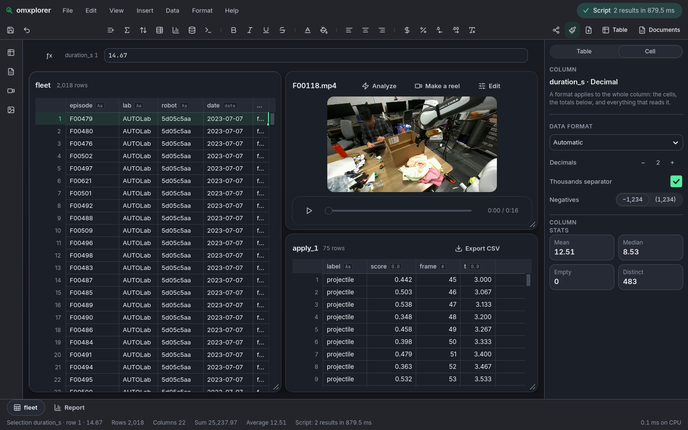

Your model, as a function.
A PyTorch network becomes a function an omxcode script calls. It runs inside the app, on the GPU, with no server beside it. One command converts it and checks it against PyTorch. You write no Mojo.
Set up. One command after the clone.
scripts/setup does everything a newcomer used to do by hand:
- env: Mojo, MAX and the tools, through pixi. A half-installed environment is cleaned and installed again on its own.
- build: omxplorer, the showcase app. The first build takes about five minutes.
- data: a slice of DROID, real robot episodes (CC-BY-4.0), fetched from the Hugging Face Hub and cut into clips with their telemetry.
- packs: the three models that come with omxcode, each built on your machine from its maker's weights.
Run it again any time: a step that's done is skipped, so a second run takes seconds.
git clone https://github.com/abhisheksreesaila/omxcode cd omxcode scripts/setup # env, build, data, packs scripts/setup --no-models # everything but the packs
You need Linux on x86-64 with GTK 4 and libadwaita 1.7+, pixi, and an NVIDIA GPU for the packs. On a Mac, setup does the rest and says why it skips the packs.
Convert it. Checked against PyTorch before it's written.
scripts/packs/from_torch.py reads your network's layers, rebuilds them as a MAX graph, compiles it for your GPU, and runs both on the test pictures. If MAX's answers differ from PyTorch's, nothing is written.
A torchvision model is one word: torchvision:resnet18 takes ResNet-18 with its default weights. ResNet-18 is how scene(), the third model that comes with omxcode, was made.
Your own network is a Python file and a function that returns it: my_net.py:build. The converter traces it with torch.fx, so ordinary forward code works: residual adds, joined channels, activations as modules or as calls.
--function is what scripts will call it. The labels come from torchvision, from a LABELS list in your file, or from --labels file.txt.
pixi run python scripts/packs/from_torch.py \
torchvision:resnet18 build/packs/scene --function scene
traced torchvision:resnet18: 51 steps, 42 weight arrays, 5 reference pictures
scene: MAX matches torch on 5/5 pictures (top label), logits within 0.0351; 1000 labelsdef forward(self, x):
x = self.pool(self.stem(x))
x = x + self.a(x) # a residual add
x = torch.cat([self.b(x), self.c(x)], dim=1) # channels joined
x = torch.sigmoid(x) * x # mul, a function call
x = self.squash(x) # 4 × 4 left: flatten's order matters
return self.head(self.drop(torch.flatten(x, 1)))
Converted with from_torch.py tests/fixtures/models/tiny_cnn.py:tiny …: MAX matches PyTorch on all 5 test pictures, its outputs within 0.00000004.
The pack describes itself. That is the whole registration.
A pack is a folder: the compiled graph (scene.mef), its weights (scene.safetensors), labels.txt, and model.json, which the converter writes.
The framework reads every model.json in the packs folder (build/packs, or $OMX_PACKS). A folder there is a function. Take the folder away and the function is gone. No list to edit, no Mojo to rebuild.
For an image-labels pack, the framework itself crops each frame to its centre square, resizes it to the pack's size, and reads back the best label, the same way the converter's check did. Mojo and PyTorch pick the same label on every test picture.
{
"function": "scene",
"kind": "image-labels",
"about": "torchvision:resnet18 (from_torch.py)",
"input": {
"size": 224,
"fit": "centre-square",
"pixels": "RGB 0-255 NHWC float32"
},
"labels": "labels.txt",
"model": "torchvision:resnet18"
}# var m = ImageModel("build/packs/scene") # (loaded once per process: mojoui.maxrt.shared_model)
# var top = m.top_rgba(frame, w, h) # a video frame (one UInt32 a pixel, RGBA in memory) → Guess
# m.labels[top.label], top.score # its best label and how sure (softmax, 0–1)
# var logits = m.logits_rgba(frame, w, h) # every label's raw output, in labels.txt's orderCall it. From a script, a button or an agent.
In omxplorer, open a video and the Script window. The new model is already in the Apply row, beside detect. Apply it to a few seconds, or write the call yourself:
Each frame becomes a row: frame, t (seconds), label and score (how sure, 0 to 1). The result lands as a table card, so the next line of the script can query it, join it to the telemetry or chart it.
Agents get it too: omxplorer's agent host offers an apply-scene tool as soon as the pack is there.
labels = scene(f00118, 3, 8); per_label = SELECT label, COUNT(*) AS frames FROM labels GROUP BY label;
The robot's camera isn't what ImageNet was trained on, so ResNet-18's labels for it are guesses ("projectile", "dishwasher"). That's fine: this page is about plugging a model in, and your own model will know your own footage.

What it can't do yet.
Convolutional networks
It converts Conv2d (groups 1), BatchNorm2d, Linear, the common activations, max and average pooling, add, mul, cat and flatten. Anything else stops it with the layer's name, for example an Upsample. Then that part's MAX graph is written by hand, as scripts/packs/yolox.py does.
Pictures to labels
A pack the framework runs by itself takes a picture and returns labels. Text models (classify(), e5) and detectors (detect(), YOLOX) work too, but each needs its own Mojo for what goes in and comes out: a tokenizer, box decoding.
Linux with an NVIDIA GPU
Packs are compiled by MAX for the GPU in the machine, on Linux. The converter checks every pack on that GPU before writing it. Macs run omxplorer and its video, but not packs yet.
Where to go from here.
omxplorer
The app these functions live in: tables, video, charts and one Script window over all of them.
Your first app
One Mojo file that becomes a native Linux app and a web app.
The converter
from_torch.py: about 350 lines, every layer it knows in one place.
For your agent
llms.txt: these docs in a form a coding agent can read.